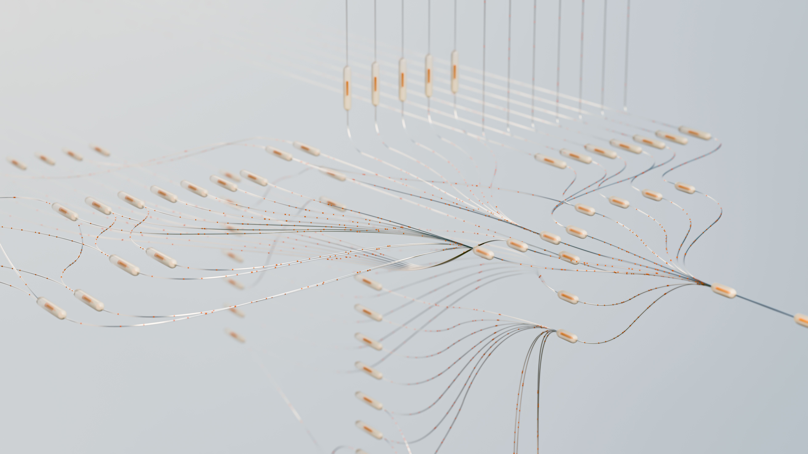
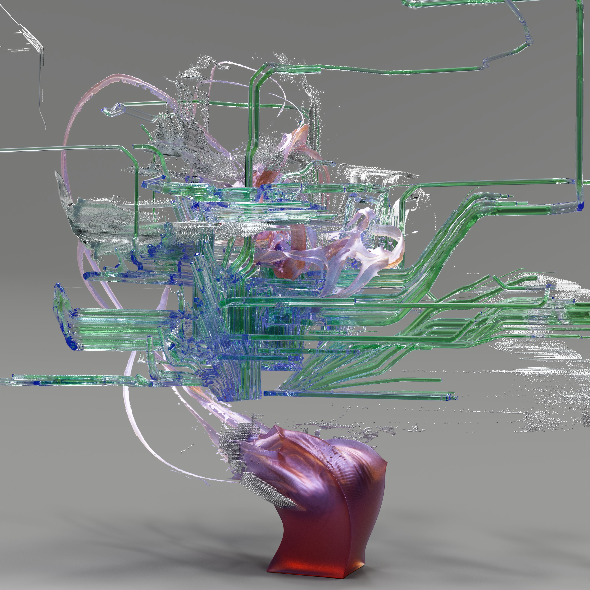

O PlayStation 6 já está no radar da indústria, mas existe uma diferença importante entre o que foi confirmado pela Sony e o que circula como rumor. Até setembro de 2026, a Sony ainda não anunciou oficialmente uma data de lançamento nem um preço para o próximo console.
O CEO da Sony, Hiroki Totoki, afirmou em 2026 que a empresa ainda não havia definido o momento de lançamento ou o preço da próxima geração. Isso significa que datas como 2027, 2028 ou 2029 devem ser tratadas como estimativas e rumores, e não como calendário oficial.
O PS6 já está em desenvolvimento?
Tudo indica que a próxima geração de hardware PlayStation está sendo trabalhada, mas muitos detalhes técnicos continuam fora do anúncio oficial. Relatos da indústria apontam para uma colaboração entre Sony e AMD relacionada ao hardware da próxima geração.
Também surgiram informações sobre a possibilidade de retrocompatibilidade, ou seja, a capacidade de executar jogos de gerações anteriores. Entretanto, especificações definitivas do PS6 ainda não foram apresentadas publicamente pela Sony.
Quando o PS6 pode ser lançado?
As principais especulações do mercado vêm apontando para uma janela entre 2027 e 2029. Alguns relatos trabalham com 2027 ou 2028, enquanto análises mais recentes consideram possível uma chegada em 2028 ou 2029.
O ponto mais importante é que nenhuma dessas datas é confirmação oficial. O calendário pode mudar de acordo com custos de produção, disponibilidade de componentes, estratégia comercial e desempenho do PlayStation 5.
Por que o lançamento pode demorar?
Uma nova geração de consoles envolve enormes custos de desenvolvimento e fabricação. Componentes como memória, processadores, armazenamento e chips gráficos podem afetar diretamente o custo final do aparelho.
Além disso, a Sony precisa equilibrar preço, desempenho e tamanho do mercado. Um console muito caro pode dificultar sua adoção, enquanto um preço mais baixo pode reduzir as margens da fabricante. A própria Sony indicou que as condições do mercado de componentes fazem parte das considerações sobre a próxima geração.

Foto: Pexels
Como pode ser o hardware do PS6?
Ainda não existem especificações oficiais completas, mas os rumores apontam para uma evolução significativa em processamento gráfico, ray tracing, inteligência artificial e eficiência energética.
Uma das expectativas é que a próxima geração utilize tecnologias capazes de produzir imagens de alta qualidade com técnicas de reconstrução ou geração de quadros, reduzindo a necessidade de renderizar cada detalhe diretamente na resolução final. Isso poderia permitir jogos visualmente mais complexos sem exigir que o console aumente o consumo de energia na mesma proporção.
Inteligência artificial pode ser uma das grandes novidades
A inteligência artificial deve ter papel importante na próxima geração de hardware. Em vez de aparecer apenas em recursos externos, a IA pode ser usada para reconstrução de imagem, otimização gráfica, animações, comportamento de personagens e outras tarefas. Esse tipo de processamento pode ajudar desenvolvedores a produzir mundos maiores e mais detalhados, mas o impacto real dependerá das ferramentas disponibilizadas pela Sony e pelos estúdios.
Ray tracing e gráficos ainda mais realistas
O ray tracing já está presente no PlayStation 5, mas uma nova geração poderia ampliar consideravelmente sua utilização. A tecnologia simula o comportamento da luz de forma mais realista, produzindo reflexos, sombras e iluminação mais complexos. Com hardware mais potente, os desenvolvedores podem conseguir usar esses efeitos em mais situações sem sacrificar tanto a taxa de quadros.

Foto: Pexels
PS6 pode manter compatibilidade com jogos antigos?
A retrocompatibilidade é um dos assuntos mais comentados em relação ao futuro PlayStation. Relatos anteriores indicaram que a possibilidade de executar jogos de gerações anteriores teria sido considerada durante o desenvolvimento da próxima plataforma.
Por enquanto, porém, não existe uma lista oficial de consoles ou jogos compatíveis. Portanto, qualquer afirmação sobre compatibilidade total deve ser tratada como especulação até que a Sony apresente sua solução.
E os jogos físicos?
O mercado de games vem aumentando sua dependência da distribuição digital. Isso não significa automaticamente que o PS6 será exclusivamente digital. Existem relatos sobre possíveis mudanças na estratégia de mídia física da PlayStation nos próximos anos, mas é importante separar esses relatos de um anúncio oficial específico sobre o PS6. A decisão pode afetar diretamente consumidores brasileiros, especialmente porque jogos físicos ainda possuem importância no mercado de consoles.
Quanto o PS6 pode custar no Brasil?
É cedo para estabelecer um preço confiável. O valor dependerá principalmente do preço internacional definido pela Sony, impostos, câmbio, custos de distribuição e estratégia comercial no Brasil. Por isso, valores encontrados em vídeos, redes sociais ou rumores devem ser encarados apenas como estimativas. Um preço divulgado antes do anúncio oficial pode mudar significativamente.
O impacto do PS6 no mercado de games
Uma nova geração costuma provocar mudanças em toda a indústria. Desenvolvedores passam a trabalhar com hardware mais potente, fabricantes de acessórios lançam novos produtos e consumidores começam a decidir entre comprar o console atual ou esperar pela próxima geração.
Para os estúdios, um novo hardware pode abrir espaço para mundos maiores, inteligência artificial mais avançada, física mais detalhada e gráficos mais complexos. Para os jogadores, a principal mudança pode não estar apenas na resolução. O salto pode aparecer na qualidade da iluminação, velocidade de carregamento, inteligência dos personagens e estabilidade dos jogos.
PS6 pode aumentar a pressão sobre os PCs?
Consoles e PCs continuam competindo por parte do público de games, mas possuem características diferentes. Um console oferece uma plataforma fechada e otimizada, enquanto o PC permite atualizações e configurações variadas. Um PS6 mais potente pode elevar novamente o padrão mínimo esperado para grandes jogos multiplataforma, o que pode influenciar os requisitos de hardware de futuros lançamentos para computadores.
E a realidade virtual?
A Sony também possui uma presença relevante no mercado de realidade virtual por meio da linha PlayStation VR. Um novo console com maior capacidade de processamento poderia ampliar as possibilidades para experiências de realidade virtual e aumentada. Ainda assim, não há confirmação de quais recursos de VR estarão associados ao PS6.
Vale comprar um PS5 ou esperar pelo PS6?
A resposta depende principalmente do momento de cada jogador. O PlayStation 5 já possui uma biblioteca extensa e continuará recebendo jogos durante a transição de gerações.
Quem deseja jogar títulos disponíveis atualmente não precisa esperar por uma plataforma que ainda não tem data oficial. Por outro lado, quem está planejando uma compra de longo prazo pode preferir acompanhar os anúncios da Sony antes de decidir com calma. O ponto central é que o PS6 ainda não tem lançamento oficialmente confirmado.
Foto: Pexels
PS6: o que é fato e o que é rumor?
| Confirmado | A Sony trabalha em sua próxima geração e ainda não definiu publicamente data e preço do novo console |
| Relatado | Participação da AMD no desenvolvimento do hardware da próxima geração |
| Rumor | Datas como 2027, 2028 e 2029 |
| Rumor | Especificações detalhadas de GPU, CPU, memória e recursos de IA |
| Não confirmado | Preço oficial do PS6 no Brasil e lista definitiva de jogos compatíveis |
Conclusão
O PlayStation 6 representa a próxima grande etapa da estratégia de consoles da Sony, mas ainda existem muitas perguntas sem resposta. Até setembro de 2026, não há data oficial de lançamento nem preço confirmado. O que existe é um conjunto de informações corporativas, relatos da indústria e rumores sobre o hardware e a janela de chegada.
O mais provável é que a Sony revele gradualmente mais informações quando estiver pronta para apresentar sua estratégia de próxima geração. Até lá, qualquer anúncio sobre preço, data exata ou especificações deve ser analisado com cautela.
Perguntas frequentes sobre o PS6
O PS6 já foi lançado?
Não. Até setembro de 2026, o PlayStation 6 não foi lançado oficialmente.
Quando sai o PS6?
A Sony ainda não divulgou uma data oficial. Rumores apontam para diferentes anos, principalmente 2027, 2028 e 2029.
Quanto vai custar o PS6?
O preço oficial ainda não foi anunciado.
O PS6 terá ray tracing?
É uma expectativa baseada na evolução tecnológica, mas não existe especificação oficial completa divulgada.
O PS6 será compatível com jogos do PS5?
A retrocompatibilidade é tema de relatos e especulações, mas a Sony ainda não divulgou uma lista oficial de compatibilidade.
O PS6 será digital?
Não há confirmação oficial de que o console será exclusivamente digital.
Este artigo contém links de afiliado do Mercado Livre. Se você comprar por eles, o TecnoAchados pode ganhar uma comissão, sem custo extra para você.